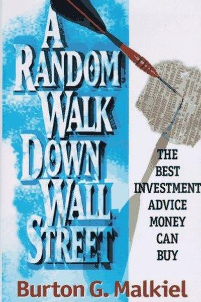

Why Did First Republic Bank Fail?
The Bank That Catered to the Rich — and Died of a Run
📜 What Happened
First Republic served wealthy clients with jumbo mortgages and low-rate loans, funded by uninsured deposits — a model that looked brilliant while rates stayed low. When the Fed raised rates and Silicon Valley Bank collapsed, wealthy depositors — the bank's own customers — panicked and pulled $100 billion in weeks. Unlike SVB, First Republic got rescue deposits, but the run kept coming. In May 2023 regulators seized it and sold it to JPMorgan — the second-largest bank failure in US history, felled not by bad loans but by fragile funding.
☠️ The Fatal Mistake
Funding long-term, low-rate assets with short-term, flighty deposits — rich customers are exactly the ones who can move money in an afternoon.
🧠 The Lesson (Free for You)
How your money is funded matters as much as where it's invested. If your funding can run in a day, you're one rumor from collapse — in banks AND in life, liquidity is survival.
📕 The Antidote Book

Princeton economist Burton Malkiel wrote the most enduring investing book ever published, arguing with 50 years of data that stock prices are essentially unpredictable — a 'random walk' — because all known information…
📖 OPEN THE FULL INTERACTIVE BREAKDOWN →Searchable, filterable, free forever — they paid billions; your lesson is free.